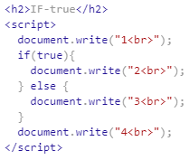

JavaScript - 조건문
(1) 조건문의 문법
조건문(Conditional statement)
: 하나의 프로그램이 하나의 흐름으로 가는 것이 아니라
조건에 따라서 다른 순서의 기능들이 실행되도록 하는 것
① 조건문 없이 일반적으로 실행할 경우
→ 1, 2, 3, 4가 순서대로 나왔다.
② True일 경우 실행

→ 순서대로 실행은 되는데, 1, 2 다음에 3은 안 나오고 4가 나왔다.
즉, 3을 무시하는 방향으로 실행의 순서가 바뀐 것이다.
③ False일 경우 실행
→ 순서대로 실행은 되는데, 1 다음에 2는 안 나오고 3, 4가 나왔다.
즉, 2을 무시하는 방향으로 실행의 순서가 바뀐 것이다.
(2) 조건문의 활용
JavaScript - 6. 웹브라우저 제어에서 만들었던
Night&Day 버튼을 하나로 합쳐서 Toggle 버튼으로 만들어 보자.
Day 모드일 때 Night 버튼을 누르면 Night 모드로 되면서 버튼이 Day 버튼으로 바뀌고,
Night 모드일 때 Day 버튼을 누르면 Day 모드로 되면서 버튼이 Night 버튼으로 바뀌도록 만들 것이다.
※ Night02.html에서 시작한다.
대략적인 개요는 다음과 같이 짜면 될 것이다.

if의 조건으로 '이 input 태그의 value 값이 Night일 때'를 줘야 할 것이다.
(this.value를 쓰면 되지만 여기서는 모른다고 가정하고 검색을 해보자.)
검색어: javascript element get value
즉, document.querySelector(선택자).value를 사용하면
해당 태그의 value를 가져올 수 있는 것이다.
태그에 night_day라는 id를 주고 if문을 완성한다.
Night 버튼을 누르면 value가 Day로 바뀌게 만들고,
else 부분도 완성한다.

Night03.html로 저장했다.
(3) 리팩토링
리팩토링: 코드의 중복을 제거해서 가독성을 높이고 유지보수를 하기 편리하게 효율적으로 만드는 것.
1) 위에서 만든 버튼을 페이지 제일 밑에도 넣을 경우에,
코드를 복사해서 붙여넣으면,
화면은 야간모드/주간모드로 바뀌지만,
버튼에 써있는 글자가 night에서 day로 바뀌지 않는다.
방법 ① 밑의 input 태그의 id 뒤에 2를 붙여준다.
방법 ② document.querySelector('#night_day2')는 사실 자기 자신(input 태그)을 가리키는 것이다.
이 때 document.querySelector('#night_day2')를 this로 바꿀 수 있다.
→ Night04.html로 저장했다.
2) document.querySelector('body')라는 부분이 중복해서 등장하고 있다.
→ var target = document.querySelector('body');으로 이것을 target이라는 변수로 지정해준다.
※ document.querySelector('body').style까지 변수로 지정해도 작동한다.
→ Night05.html로 저장했다.